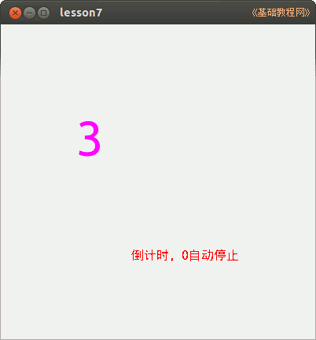

2014-2015 第一学期九年级程序设计教学设计
作者：TeliuTe 来源：基础教程网
七、学会条件判断 if 返回目录 下一课
（一）教学设计
1、学习目标：
2、注意事项：绕过弯来，既不要跳也不要落，一楼过了二楼
3、教学过程：
1）教师准备学案和板书；
2）学生整队进入，开机抄黑板上笔记；
3）教师讲解板书演示操作；
4）学生打指法、日志、完成操作；
5）教师打勾记录学生指法成绩，检查日志和操作；
注：学生抄完笔记就开始打指法、日志，老师讲完后再继续完成；
（二）板书设计(学生笔记)
07学会条件判断 if
1.dim 定义一个变量i存放数字5
2.定时器每隔一秒数字减1
3.if 判断数字大小是否为0
if i =0 then timer1.enable=false
操作图示：

（三）课后记
2014年11月04日 星期二 17:31
第7课 学会条件判断
1、画一个标签A，一个定时器，True
2、空白处，时间，open，输 i=5
3、第二行输 public i as integer
4、定时器，事件：
i = i-1
label1.text = i
if i == 0 then timer1.enabled = false
--
3班先上，上周的课没上，两节合一节
有些把public输错，多了个open 原来是逗号没注意
--
label2，代码里是label1不一样
0输成O的，timer1漏了的，then输错
--
注重思维，不是多难，每节课绕一下弯
1班记不住东西，抄笔记也慌慌张张的
--
似乎有些抵触老师的讲解，喜欢做的时候问
又重新屏广，讲一下要找到位置，在合适的地方输入代码
--
最后都做完好了，稍微有些难度的也有挑战性
这周开始开互联网，学生可以上外网了
返回目录 下一课
本教程由86团学校TeliuTe制作|著作权所有
基础教程网：http://teliute.org/
美丽的校园……
转载和引用本站内容，请保留作者和本站链接。